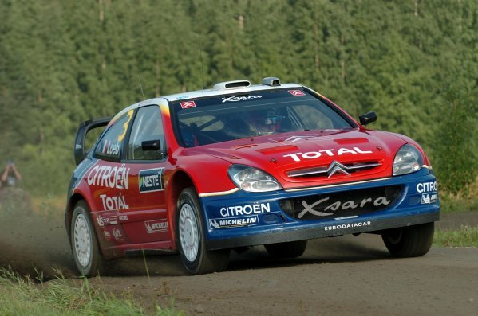
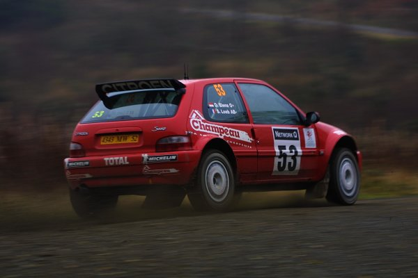

A História de Sebastien Loeb

Loeb é um piloto de rally nascido na França em 1974, ele é um dos maiores pilotos da história do automobilismo tendo conquistado 9 titulos no Mundial de Rally (wrc) e também é um ótimo piloto em corridas de endurance e gt ao longo da carreira.
1999-2003 O Inicio no Mundial de Rally
Entre 1999-2003 foi marcada pela ascensão do Loeb no mundial de rally.
Em 1999 ele fez sua estreia no mundial ao volante de um Citroen Saxo Kit Car com uma equipe privada, com seu desempenho ele ganhou a ateção e se tornou um prodigio do mundo do Rally. Já em 2000 ele continuou a correr no mundial com a Citroen e também fez dois rallys com Toyota Corolla do wrc e conseguindo 2 posições entre os 10 primeiros nos rallys da frança e na italia, o mundo via suas primerias demosntrações de habilidades e velocidades que ficariam marcadas no automobilismo

Em 2001, Loeb conseguiu seu primeiro contrato de fábrica com a Citroen e também nesse ano marcou seu titulo no Junior WRC vencendo todas os rallys que disputou com seu Citroen Saxo, foi com esse titulo que a Citroen viu o grande sucesso que teria com Loeb nos seus carros, já para 2002 colocaram ele para correr alguns rallys na equipe de fábrica da Citroen.
Em 2002, Loeb espantou o mundo do automobilismo ao conseguir um 2° no rally de abertura da temporada o histórico rally de Monaco aonde ele so foi derrotado pelo tetracampeão do WRC Tommi Makinen, e sua primeira vitória viria um pouco mais tarde naquele ano no Rally da Alemanha aonde desbancou campeões mundiais como Burns, Mcrae e Gronholm, conseguindo a 1° dos seus 80 triunfos no mundial